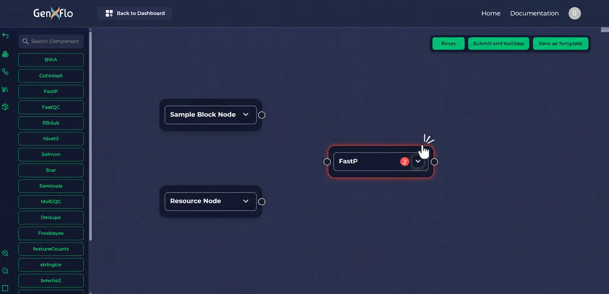
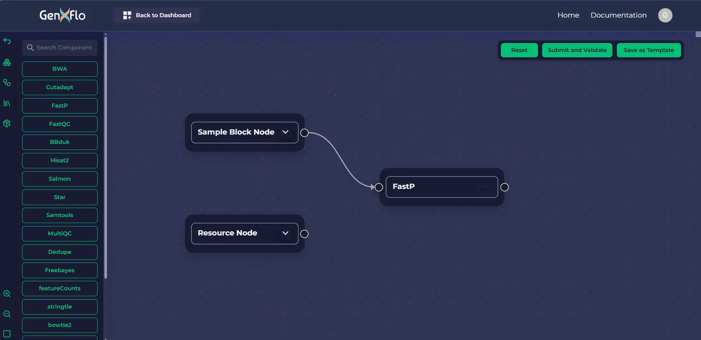
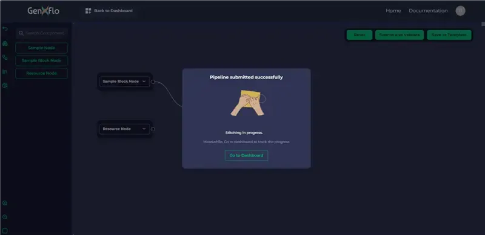

Low-code, high impact
Build pipelines visually without learning complex workflow syntax, saving time and reducing errors.
Product Overview
Try it liveClick Create new pipeline, drag nodes onto the canvas and connect them, then press Submit and Validate.
GenXflo is a no-code bioinformatics workflow builder. Scientists design, validate and export ready-to-run pipelines on a visual canvas, going from idea to executable workflow in minutes without writing code.
Every pipeline follows four steps (Drag → Connect → Validate → Export), whether it is RNA-seq, variant calling or genome annotation. MCP support also lets AI clients turn natural-language workflow intent into validated pipeline designs.
Workflow
Start by dragging your favorite bioinformatics tools onto the workflow canvas.
Each tool is represented as a visual block (node) on the canvas. You can add as many as you like to create single-step analyses or complex, multi-stage pipelines.
Dragging tools is simple and intuitive, just click, drag, and drop. No terminal commands, no syntax errors, no setup headaches.

Next, connect your tools in the order they should run.
In GenXflo, the connectors (arrows) between nodes define how data flows from one step to another. For example, the output of FastQC can feed into FastP, whose output then moves into HISAT2 for alignment.
The connections are logically validated, ensuring that output file types match the input requirements of the next tool.
The canvas updates dynamically as you design, helping you visualize your pipeline from raw data to final output in real time.
In GenXflo, your analysis literally takes shape in front of your eyes.

GenXflo's AI validation system works behind the scenes in real time to detect and prevent common issues during workflow construction.
Before any workflow is executed, the AI engine checks how tools are connected on your canvas. It ensures that:
This real-time feedback helps users identify and fix issues instantly, reducing trial-and-error and improving the accuracy of the final pipeline.
MCP-enabled orchestration further improves validation flow by supporting structured communication between AI-assisted design steps and workflow checks.
Before generating the final workflow code, GenXflo performs an AI-powered pre-execution check. This process identifies:
The system highlights potential issues before export, preventing failed executions and wasted computational resources.

Once your workflow is designed and validated, the final step is to export it into executable code, transforming your visual design into a ready-to-run workflow package.
Simply click "Submit" on the GenXflo canvas to begin. A pop-up will appear confirming that your pipeline zip file is being generated. This package contains everything needed to reproduce your analysis, including workflow code, configuration files, and metadata.
After submission, click "Go to Dashboard" to monitor the progress of your pipeline creation. Each workflow you submit appears here with one of four status indicators:
Submitted:
The request has been received and queued for processing.
In Progress:
The system is actively generating your pipeline files.
Succeeded:
The workflow has been created successfully and is ready for download.
Failed:
The pipeline creation didn't complete; you can download a log file for details.
This dashboard makes it easy to see exactly where your workflow stands and ensures complete transparency in the export process.
Once your pipeline is ready, you can click "View Schema" to see a detailed visual diagram of your workflow. This diagram shows how tools are connected, the data flow between steps, and the overall execution order.
Inside the schema popup, you'll find a "Download Schema Diagram" button, allowing you to save this visual representation to your local device for documentation or sharing.
When the status changes to Succeeded, you can click "Download file" to retrieve your complete pipeline zip file. Before downloading, GenXflo asks for confirmation, giving you the option to proceed or cancel.
The downloaded zip file includes:
You can now run the workflow on your preferred platform (Nextflow, and in the future Snakemake or WDL), share it with collaborators, or archive it for future use.
These files are fully executable on any system that supports the respective workflow language — from local machines to HPC clusters to cloud platforms.
Every change to a pipeline is saved as a new version, so you can review its history at any time.
From the version history you can:
This makes it easy to compare runs, recover from a mistake, and keep a clear record of how your pipeline evolved.
Exporting your workflow gives you:
Reproducibility:
Every parameter, input, and tool is encoded and documented.
Portability:
Run your workflow anywhere, locally or in the cloud.
Transparency:
Review and share your workflow's logic as open, human-readable code.
Collaboration:
Send your pipeline to colleagues or publish it alongside your research.
GenXflo's export feature transforms your visual design into production-ready computational pipelines, seamlessly bridging the gap between graphical simplicity and computational rigor.

Extensibility
One of GenXflo’s most powerful features is the ability to add your own custom bioinformatics tools, extending the platform far beyond its built-in library. The “Custom Components” feature allows users to integrate tools that aren’t yet available in the default list, making every workflow truly personalized and adaptable to evolving research needs.
With this option, you can bring your preferred command-line programs, scripts, or containers directly into the GenXflo environment and use them just like any other built-in component on the canvas.
Start by clicking “Create New Pipeline.” You’ll be redirected to a setup page where you can enter some basic information:
Once you’ve verified the details, click “Next” to move to the main workspace where you’ll design your workflow.
On the left sidebar of the workspace, select the Custom Components icon. Click the “Add Tool” button to open the configuration form for your new component.
This form lets you specify how GenXflo should locate and install your tool. You have three options:
BioArch Repository
select this if your tool is available in the BioArch collection.
Bioconda Repository
ideal for tools distributed via the Bioconda ecosystem.
Other
For tools not in Bioconda or BioArch, either provide a Source code link (to build a container with AI) or paste the Custom Docker Image URL if you already have one
You can also use “Auto-Fill with AI” to automatically complete the tool configuration fields. Alternatively, you can manually enter the details if you prefer full control.
If your tool doesn’t yet have a Docker container, GenXflo can help — simply click “Generate Dockerfile with AI” to automatically create one. This ensures your tool is fully portable and reproducible across environments.
Once all fields are filled and confirmed, click “Add” to include your tool in the GenXflo library.
Your newly added component will now appear in the Custom Components section of the sidebar. You can drag and drop it onto the canvas just like any other tool and connect it within your workflow.
If you need to make changes later, click “Edit” above the component to reopen its configuration form. After making your updates, save the changes by clicking “Update.”
To remove a custom component, simply use the Delete button, giving you full flexibility over your custom tool library.
Why GenXflo
GenXflo is designed for research teams that value efficiency, reproducibility, and simplicity. It empowers both computational biologists and lab scientists to focus on science while automating the technical complexities of workflow management.
Build pipelines visually without learning complex workflow syntax, saving time and reducing errors.
Automatic AI-driven checks ensure workflows comply with WML best practices and data compatibility standards.
Save workflows as templates for future experiments or share with collaborators to maintain consistency.
Exported pipelines run seamlessly on local machines or HPC clusters, supporting a variety of deployment options.
GenXflo supports MCP-based integrations so AI clients can discover capabilities, generate structured workflows, validate configurations, and assist with pipeline creation lifecycle tasks in a standardized way.
All exported workflows include environment metadata, tool versions, and parameter definitions for transparent and reproducible analyses.
Easily add custom components that are not included by default, expanding your workflow to incorporate a wide range of bioinformatics tools.
Model Context Protocol
GenXflo supports MCP (Model Context Protocol) to improve how AI clients and workflow systems communicate during pipeline design, validation, and pipeline creation.
MCP helps translate natural-language pipeline goals into structured, canvas-ready workflows with better interoperability between components.
MCP integration improves discoverability, reduces orchestration friction, and helps teams move faster from design intent to reproducible pipeline creation outputs.
Applications
GenXflo supports a wide variety of research applications, making it a versatile solution for multiple fields of bioinformatics:
Align, call variants, and annotate genomes using integrated tools.
Automate quality control, mapping, quantification, and differential expression analyses.
Detect tumor-specific mutations using the GATK best-practices pipeline. Supports tumor-only mode with read alignment, duplicate marking, base quality score recalibration, somatic variant calling with Mutect2, contamination estimation, filtering, and functional annotation with Funcotator.
Build scalable pipelines for taxonomic classification, abundance profiling, and diversity analyses.
Identify statistically significant gene expression changes across conditions using an end-to-end pipeline with featureCounts, PyDESeq2, and MultiQC for count generation, statistical modelling, and report aggregation.
Process sequencing reads to identify genetic variations such as SNPs and insertions/deletions across whole-genome or targeted sequencing datasets.
Combine any supported tools to create unique workflows tailored to specific research needs.
For teams using AI clients, MCP connectivity makes these workflows more discoverable and easier to orchestrate across design, validation, and export stages.
GenXflo turns pipeline creation into a visual experience you drag tools onto a canvas, connect them, validate with AI, and export instantly. There’s no need to learn workflow syntax or troubleshoot scripts. The platform handles dependency management, file-type compatibility, and workflow logic automatically, letting researchers focus on science instead of coding.
Manual scripting requires deep knowledge of DSL2, channels, environment setup, and debugging. GenXflo eliminates this complexity with real-time AI validation, smart connectors, preconfigured tools, and automatic export to production-ready workflow code. You get clean, reproducible pipelines without syntax errors — in a fraction of the time.
Yes. GenXflo allows you to import your own scripts, command-line tools, or Docker containers through the Custom Components feature. You can define metadata, parameters, and environments or let AI auto-generate a Dockerfile for you. These custom tools behave just like built-in components and can be reused across multiple pipelines
Absolutely. Every exported workflow includes container references, configuration files, metadata, and version details ensuring reproducible execution anywhere. Whether you run pipelines on a laptop, HPC cluster, or cloud platform, GenXflo guarantees consistent results with Nextflow-ready code and fully preserved environment settings.